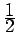

Inhalt Index DeskTop Bronstein

 Lineare Algebra Tensoren Pseudotensoren Einführung des Begriffs Pseudotensor
Lineare Algebra Tensoren Pseudotensoren Einführung des Begriffs Pseudotensor


Das Tensorprodukt der axialen Vektoren und ergibt gemäß (4.73a) einen Tensor 2. Stufe mit den Komponenten Da sich jeder Tensor 2. Stufe als Summe eines symmetrischen und eines schiefsymmetrischen Tensors 2. Stufe darstellen läßt, gilt wegen (4.80)
| (4.101) |
Der schiefsymmetrische Anteil in dieser Gleichung ergibt bis auf den Faktor  gerade die Komponenten des Vektorprodukts  so daß man den axialen Vektor
so daß man den axialen Vektor  mit den Komponenten c1,c2,c3 auch als schiefsymmetrischen Tensor 2. Stufe
mit den Komponenten c1,c2,c3 auch als schiefsymmetrischen Tensor 2. Stufe
| (4.102a) |
mit
| (4.102b) |
auffassen kann, dessen Komponenten die Transformationsformel (4.100b) für Tensoren 2. Stufe erfüllen.
Damit kann man jeden axialen Vektor (Pseudovektor oder Pseudotensor 1. Stufe) als schiefsymmetrischen Tensor 2. Stufe C auffassen, wobei gilt
| (4.103) |